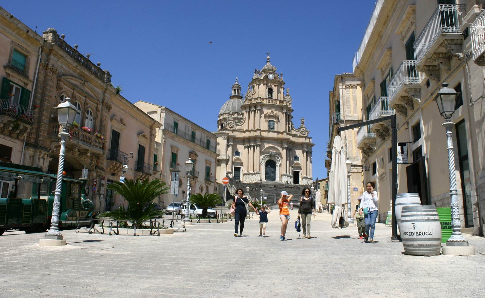
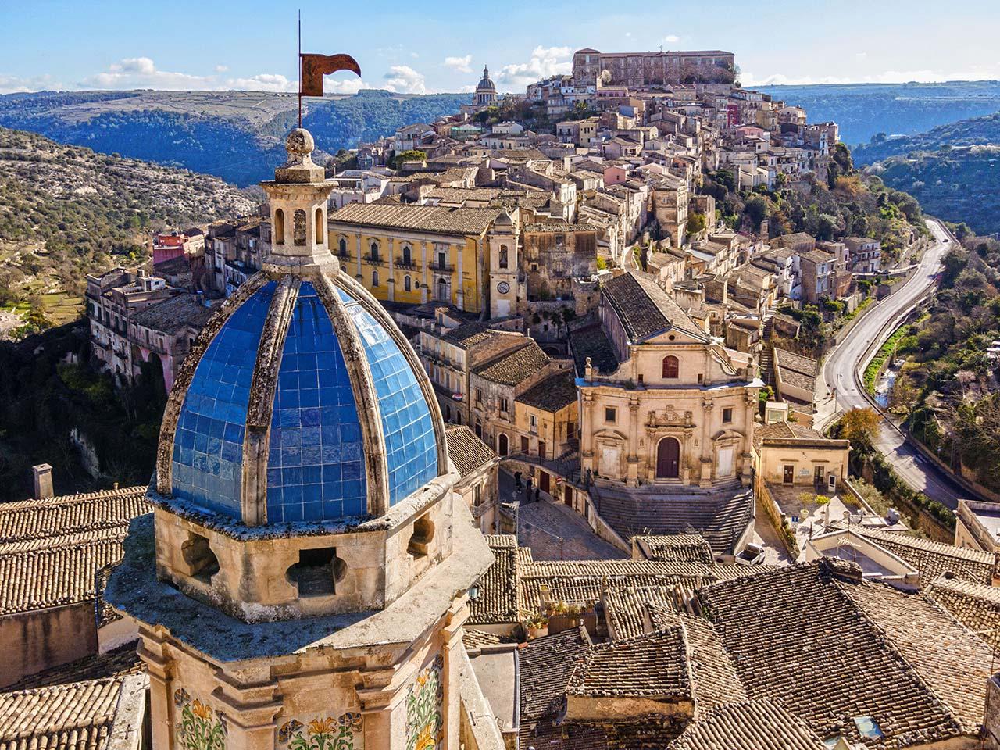

Piazza del Duomo
 Ragusa
Ragusa

Ragusa è un comune italiano di 74 094 abitanti, capoluogo dell'omonimo libero consorzio comunale, in Sicilia. Nel 1693 un devastante terremoto causò la distruzione quasi totale dell'intera città, mietendo più di cinquemila vittime.
Nel 1693 un devastante terremoto causò la distruzione quasi totale dell'intera città, mietendo più di cinquemila vittime. La ricostruzione, avvenuta nel XVIII secolo, la divise in due grandi quartieri: da una parte Ragusa superiore, situata sull'altopiano, dall'altra Ragusa Ibla, sorta dalle rovine dell'antica città e ricostruita secondo l'antico impianto medioevale.
I capolavori architettonici costruiti dopo il terremoto, insieme a tutti quelli presenti nel Val di Noto, sono stati dichiarati il 25 giugno 2002 patrimonio dell'umanità dall'UNESCO. Ragusa è uno dei luoghi più importanti per la presenza di testimonianze d'arte barocca, come le sue chiese e i suoi palazzi settecenteschi.

Ragusa